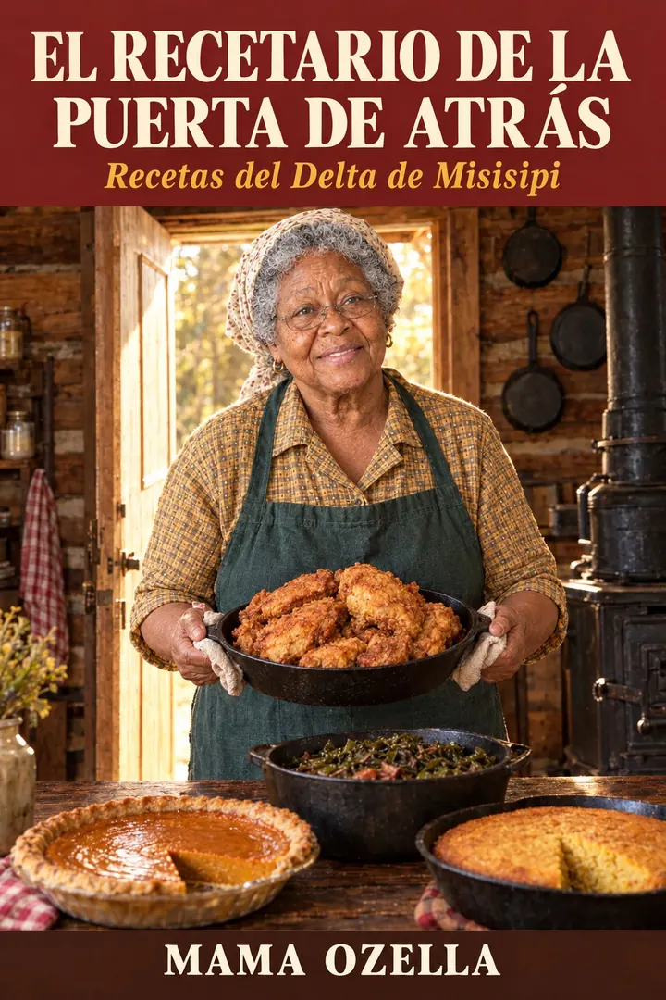
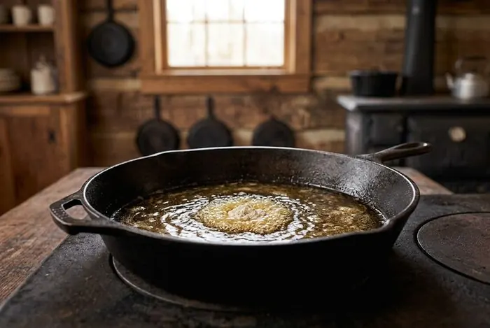
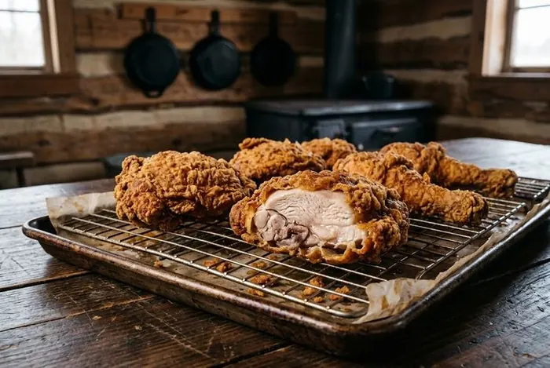
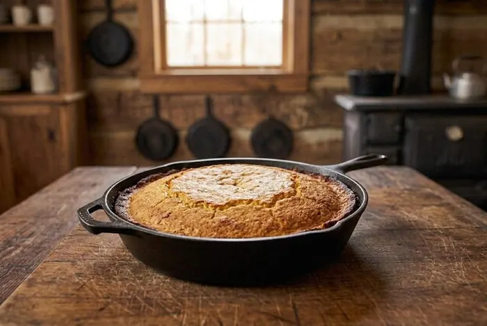
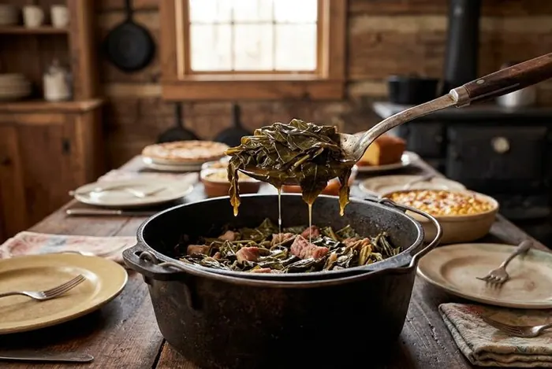
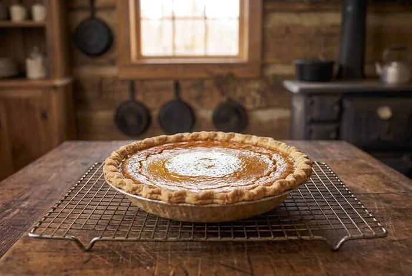
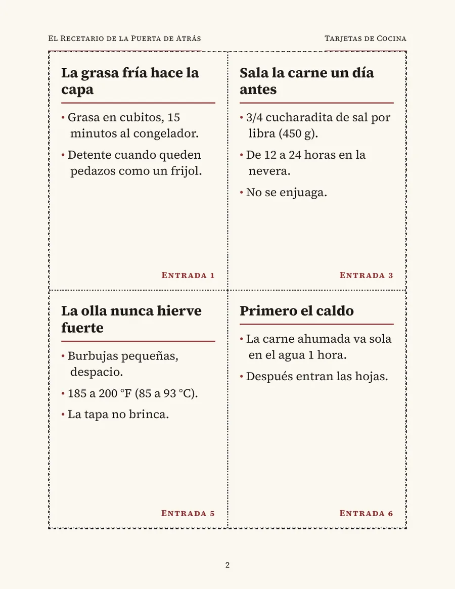
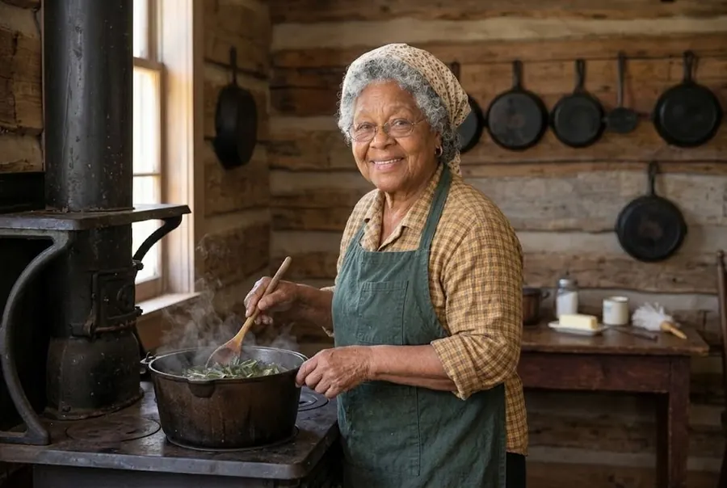
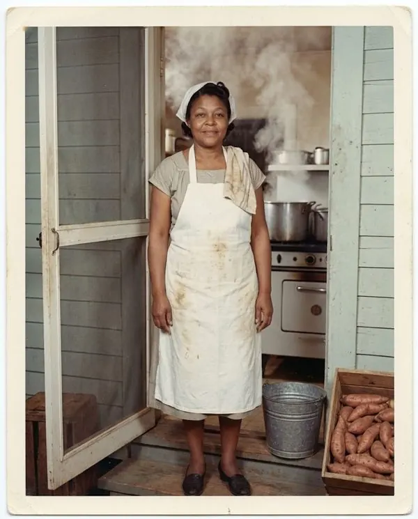

Un lugar en la mesa de Mama Ozella
Su comida salió en el menú. Su nombre, nunca.
Mi mamá, Hattie, cocinó quince años en un café de Misisipi. Siempre entró por la puerta de atrás.
Este libro trae 220 entradas con lo que ella hacía a propósito: qué hacer, por qué funciona y cómo saber que quedó bien.
- 14 fotos que te enseñan cómo se ve “listo”
- Las 16 recetas que más me piden, completas y con foto
- La temperatura exacta del pollo, el relleno y los pasteles
- Medidas en tazas y en gramos, en °F y en °C
Un solo pago · descarga inmediata · garantía de 30 días
Son 12¢ por cada entrada.
De regalo: las 24 Tarjetas de Cocina para imprimir.

- 220entradas numeradas
- 237páginas, un PDF
- 14fotos de “listo”
- 16recetas completas
¿Te ha pasado?
La receta la tienes. Lo que falta es el porqué.
“Para que la cocina no se muera con la cocinera”, me dijo mi nieta Kiara. Cuando se va la que cocinaba, se va también todo lo que nunca escribió.
- Acción de Gracias
El relleno salió seco otra vez. O aguado en el centro. Nadie dijo nada, pero nadie repitió.
En el libro: Entrada 69 · pág. 62
- El número exacto en el centro del molde: 165 °F (74 °C)
- Cómo se siente al presionar con la cuchara: húmedo pero firme
- Por qué el pan de maíz de ayer es la base (Entrada 126)
- Domingo, 1 de la tarde
El pollo se ve dorado por fuera. Lo cortas, y junto al hueso todavía está rosado.
En el libro: Entrada 44 · pág. 45
- Por qué el color de afuera no dice nada del hueso
- La burbuja que te avisa antes que el termómetro
- Por qué descansa en rejilla y no en papel (Entrada 10)
- El desayuno
Los biscuits salieron bajitos y duros, como galletas, aunque seguiste la receta al pie de la letra.
En el libro: Entrada 22 · pág. 30
- De 10 a 15 vueltas con el tenedor, y para ahí
- Por qué la masa fea es la masa buena (Entrada 46)
- La taza de harina que lleva una quinta parte de más (Entrada 21)
- Te llama tu nieto
Te pide las berzas de la bisabuela. Y te das cuenta de que nadie sabe en qué orden iba todo.
En el libro: Entrada 6 · pág. 22
- La carne ahumada va primero, sola en el agua, una hora
- El color de té ralo del caldo que vale la pena (Entrada 53)
- Listas cuando se doblan sobre la cuchara (Entrada 54)
- La hoja de la iglesia
Tu nombre ya está en la lista: macarrones para cincuenta. Nunca has hecho más de una bandeja.
En el libro: Entrada 198 · pág. 154
- Qué se multiplica tal cual, y la sal solo a tres cuartas partes
- Por qué varias bandejas y no una olla gigante
- Macarrones para 50, en bandejas (Entrada 202)
- Saliendo del horno
El pastel de camote se agrietó en el centro y soltó agua en el plato.
En el libro: Entrada 59 · pág. 56
- Se saca cuando el centro todavía tiembla un poquito
- El centro marca de 175 a 180 °F (79 a 82 °C)
- Por qué sigue cocinándose fuera del horno
Y otras doscientas entradas como estas, del sartén de hierro a la lata de grasa.
Elige lo tuyo
¿Qué quieres que te salga como a ella?
Toca uno o varios. Abajo aparece cada entrada del libro que habla de eso, con su número y su página.
Parte 9 · Las Dieciséis
Los dieciséis platos que más me piden.
Cada uno escrito completo: lo que necesitas, cómo se hace, por qué y cómo saber que quedó bien. Con su foto y su página.
Toca un plato para verlo más grande.
Pollo frito del Sur
pág. 168
Berzas con su caldo
pág. 171
Chuletas en salsa de cebolla
pág. 174
Pan de maíz en sartén de hierro
pág. 177
Pollo con dumplings
pág. 180
Macarrones con queso al horno
pág. 183
Pastel de camote
pág. 186
Cobbler de durazno
pág. 189
Pudín de plátano
pág. 192
Pound cake de antes
pág. 195
Bagre frito con hushpuppies
pág. 198
Tamales calientes del Delta
pág. 201
Frijoles de ojo negro con papada
pág. 204
Camotes confitados
pág. 207
Relleno de pan de maíz
pág. 210
Tea cakes de la abuela
pág. 213
Parte 2 · Cómo saber que está listo
Otros libros te dicen cuándo está listo. Este te lo enseña.
Mamá nunca miró un reloj para saber si el pollo estaba listo. Por eso el libro trae 14 fotos de cómo se ve cada cosa cuando ya está. Aquí tienes seis.

Así canta la harina cuando la grasa está lista para freír.
Entrada 43 · pág. 44
Así se ve el pollo frito cuando está listo: costra dura y dorada.
Entrada 44 · pág. 45
Así se ve el pan de maíz cuando ya está.
Entrada 49 · pág. 49
Así se ven las berzas cuando están listas: sedosas, que se doblan en la cuchara.
Entrada 54 · pág. 52Así brilla el almíbar de los camotes: cubre la cuchara y cae en un hilo.
Entrada 58 · pág. 55
Así se ve un pastel de natilla listo para salir del horno.
Entrada 59 · pág. 56
Mira por dentro
Así se ve cuando lo abres.
Estas son tres páginas del libro, tal como se abren en tu teléfono. La letra es grande a propósito, y cada página se imprime bien en papel normal.
- Entrada 1 · pág. 19
La primera ley de Mamá Hattie: la grasa fría hace la capa.
- Entradas 53 y 54 · pág. 52
El caldo de las berzas y cómo saber que están tiernas, con sus fotos.
- Entrada 205 · pág. 168
Parte 9: el pollo frito del Sur, completo y con su foto.
Toca una página para verla más grande.
Parte 1 · Las Leyes de Mamá Hattie
Lo que casi todos hacemos. Y Mamá no.
Muchas costumbres de cocina se repiten sin que nadie pregunte por qué. Mamá sí preguntaba. Aquí van seis de sus leyes, con la razón que trae el libro.
- Lo que casi todos hacemosLavar el pollo crudo en el fregadero.Lo que hacía MamáEl pollo crudo no se lava.
El agua no le quita las bacterias: las salpica por el fregadero, la mesa y los platos. Solo las mata cocinarlo hasta 165 °F (74 °C).
Entrada 35 · pág. 37 - Lo que casi todos hacemosEscurrir el pollo frito sobre papel.Lo que hacía MamáDescansa en una rejilla.
Sobre el papel, el vapor se queda atrapado y ablanda la costra. En la rejilla, el aire pasa por abajo y sigue crujiente.
Entrada 10 · pág. 24 - Lo que casi todos hacemosMeter la taza directo en el saco de harina.Lo que hacía MamáLa harina se mide con cuchara.
La taza apretada lleva una quinta parte más de harina, y los biscuits y los pasteles salen secos y pesados.
Entrada 21 · pág. 29 - Lo que casi todos hacemosDejar hervir las berzas a borbotones.Lo que hacía MamáLa olla nunca hierve fuerte.
El hervor fuerte aprieta la carne, la deja dura y enturbia el caldo. A fuego suave, la carne se ablanda y el caldo queda limpio.
Entrada 5 · pág. 21 - Lo que casi todos hacemosDescongelar la carne sobre la mesa de la cocina.Lo que hacía MamáSe descongela en la nevera.
Afuera se calienta mientras el centro sigue congelado, y en esa temperatura las bacterias se multiplican rápido.
Entrada 36 · pág. 38 - Lo que casi todos hacemosDejar la olla de frijoles enfriando en la estufa toda la noche.Lo que hacía MamáLas sobras van a la nevera antes de dos horas.
Una olla grande tarda horas en enfriarse por dentro. En recipientes bajos, el frío llega al centro rápido.
Entrada 37 · pág. 38
Lo que este libro no hace.
- No es un libro de dieta ni de salud.Es la cocina del Delta como la hacía Mamá, con manteca, tocino y azúcar. No promete que bajes de peso ni que te cures de nada.
- No trae foto de cada plato.Trae 14 fotos de cómo se ve “listo” y una foto de cada una de las 16 recetas completas. Lo demás es texto, con letra grande.
- No te deja adivinando.Cuando importa, como en el pollo, el relleno y los pasteles, te da la temperatura exacta. El termómetro no es vergüenza (Entrada 38).
- No está en inglés.Es solo en español. Los ingredientes traen su nombre en inglés entre paréntesis, para que los encuentres en la tienda.
Si buscas recetas rápidas de microondas, este libro no es para ti. Si quieres cocinar como cocinaba ella, sí.
Las nueve partes
En el orden en que se aprende.
Primero las leyes, después cómo saber que está listo, y después los platos. El índice tiene enlaces: tocas un nombre y el libro te lleva a esa entrada.
- Parte 1
Las Leyes de Mamá Hattie
las técnicas, y el porqué de cada una
Entradas 1–42 · pág. 17 - Parte 2
Cómo Saber Que Está Listo
por el sonido, la vista, el olor y la mano
Entradas 43–74 · pág. 43 - Parte 3
La Olla del Dique
Big Mama Ozie y la cocina de casi nada
Entradas 75–106 · pág. 66 - Parte 4
Hierro, Grasa y Despensa
el sartén de hierro, la lata de grasa y lo que se guarda
Entradas 107–133 · pág. 90 - Parte 5
Las Discusiones
donde dos buenas cocineras no están de acuerdo, y por qué
Entradas 134–149 · pág. 108 - Parte 6
La Mesa Dulce
pasteles, cobblers, pudines y tea cakes
Entradas 150–176 · pág. 120 - Parte 7
La Puerta de Atrás
los platos de Mamá Hattie, con su nombre por fin
Entradas 177–204 · pág. 140 - Parte 8
Tarjetas de Cocina
para pegar por dentro de la puerta de la alacena
24 tarjetas · pág. 158 - Parte 9
Las Dieciséis
los dieciséis platos que más me piden, completos
Entradas 205–220 · pág. 166
Las Páginas de Tu Familia
Páginas en blanco con una línea para el nombre de la cocinera de tu familia, para que escribas lo que nadie escribió.

Tarjetas de Cocina para imprimir
24 tarjetas con lo esencial de las Entradas 1 a 65. Las imprimes en papel normal o cartulina, las recortas y las pegas por dentro de la puerta de la alacena.
La cuenta
Lo que cuesta una semana de cenas.
Siete cenas para cuatro personas, sacadas del libro. Cada costo es el que trae la misma entrada, con precios de supermercado de 2026.
| Cena | Para 4 |
|---|---|
| Frijoles que alcanzan para muchos, con arrozEntrada 80 · pág. 71 | $2.00 |
| Cómo estirar un pollo para seisEntrada 106 · pág. 88 | $8.00 |
| Hoppin’ John para los días flacosEntrada 96 · pág. 82 | $2.67 |
| Huesos de cuello de cerdo con frijolesEntrada 93 · pág. 80 | $3.50 |
| Espagueti del Sur con salchichaEntrada 104 · pág. 87 | $4.50 |
| Cuellos de pavo en la ollaEntrada 92 · pág. 79 | $8.00 |
| Pan de carne del caféEntrada 179 · pág. 143 | $7.00 |
| La semana | $35.67 |
Cómo se hizo la cuenta: cada entrada da el costo de la olla y cuántas porciones rinde. Para 4 personas, se dividió ese costo entre las porciones y se multiplicó por 4 (los cuellos de pavo rinden 4 o 5, así que se cuenta la olla entera). Son precios aproximados de supermercado en EE. UU. en 2026. Es una estimación, no una promesa: tu tienda puede costar más o menos.


Conoce a Mama Ozella
Pasa, siéntate. Soy Ozella.
Nací en 1950 en Mound Bayou, en el condado de Bolívar, Misisipi. Me pusieron el nombre de mi abuela, Big Mama Ozie, que cocinó en el dique de Greenville durante la inundación de 1927.
Pero este libro es de mi mamá, Hattie. Ella cocinó quince años en un café de Cleveland y entraba siempre por la puerta de atrás. Su pollo frito, sus berzas y su pastel de camote salían en el menú todos los días. Su nombre no salió nunca.
Ella no escribía recetas. Decía que el tazón se sabe la receta. Cuando se fue, todo lo que sabía quedó en mis manos. Mi nieta Kiara puso una cámara junto a la estufa, y entre las dos lo pasamos todo a papel.
Nadie lo escribió. Así que lo escribí yo, y le puse su nombre.
— Mama Ozella
Lo que dicen los lectores
En sus propias palabras.
Todo lo que recibes
Un libro entero de su cocina, por menos de lo que cuesta una cena fuera para la familia.
- El Recetario de la Puerta de Atrás220 entradas en nueve partes, 237 páginas, en un PDF en español con letra grande
- 14 fotos de cómo se ve “listo”Para que lo veas con tus ojos, no con el reloj
- Las Dieciséis, completasLos 16 platos que más me piden, cada uno con su foto
- Las Páginas de Tu FamiliaPara escribir las recetas de los tuyos, con el nombre de quien las cocinaba
- De regalo: Tarjetas de CocinaUn segundo PDF con 24 tarjetas para imprimir y pegar en la alacena
Un solo pago · descarga inmediata · garantía de 30 días
Cómo funciona
Pagas una vez. Lo abres en un minuto.
Pagas
Con tu tarjeta, en una página de pago segura. Nosotros nunca vemos el número, y no tienes que crear ninguna cuenta.
Se abre en un minuto
El libro aparece en la pantalla siguiente. Ábrelo en el teléfono, la tableta, la computadora o el televisor, si tiene navegador.
Queda en tu correo
Te llega el mismo enlace a tu correo, para abrirlo otra vez cualquier día que cocines. No se envía nada por correo postal.
30 días para decidir.
Léelo y cocina con él. Si en 30 días no es lo que esta página dice, contesta el correo del recibo y te devuelvo todo tu dinero. Sin formularios y sin preguntas.
No le voy a pedir a nadie que vive de su pensión que me demuestre que borró un archivo.
— Mama Ozella
Preguntas frecuentes
Lo que la gente pregunta primero.
¿Es un libro impreso o una descarga?
Es una descarga: un archivo PDF en español, de 237 páginas, tamaño carta. No se envía nada por correo postal. Si quieres tenerlo en papel, puedes imprimir las páginas que necesites en papel normal.
¿Qué trae exactamente?
220 entradas en nueve partes, 14 fotos de cómo se ve “listo”, las 16 recetas completas con su foto, un glosario, un índice de platos y Las Páginas de Tu Familia. De regalo, un segundo PDF con las 24 Tarjetas de Cocina para imprimir.
¿Qué medidas usa?
Tazas y cucharadas, con su equivalente en gramos y mililitros. Las temperaturas vienen en °F y en °C. Al principio del libro hay una tabla de equivalencias.
¿De dónde salen las recetas? ¿Están probadas?
Son la cocina del Delta de Misisipi que Mama Ozella enseña en el canal. Cada técnica y cada receta se revisó según cómo se comporta el plato en la estufa, y cada entrada te dice cómo saber que quedó bien.
No me llevo bien con la computadora. ¿Podré abrirlo?
Sí. Después de pagar, el libro se abre en la pantalla siguiente. Si puedes abrir una foto que te mandan por correo, puedes abrir este libro. Si te atoras, escríbenos a mamaozella071@gmail.com y una persona te ayuda.
¿Y si pierdo el archivo?
El enlace se queda en tu correo. Búscalo con las palabras “Puerta de Atrás” y descárgalo otra vez. Si no lo encuentras, escríbenos y te lo mandamos de nuevo.
¿Es una suscripción?
No. Pagas una sola vez y el libro es tuyo. No hay cobros cada mes.
¿Y si no es para mí?
Tienes 30 días. Contesta el correo del recibo y te devolvemos tu dinero, sin preguntas.
¿Está en inglés también?
No. El libro está solo en español. Muchos ingredientes traen también su nombre en inglés entre paréntesis, como “all-purpose flour”, para que los encuentres fácil en la tienda.
El Recetario de la Puerta de Atrás
Ponle su nombre mientras alguien todavía se acuerda.
220 entradas, el porqué de cada una y cómo saber que quedó bien. Un PDF, en tu correo en un minuto.
Un solo pago · descarga inmediata · garantía de 30 días
“Cocínalo como si alguien viniera de regreso a casa. Yo dejo prendida la luz de la cocina.”— Mama Ozella